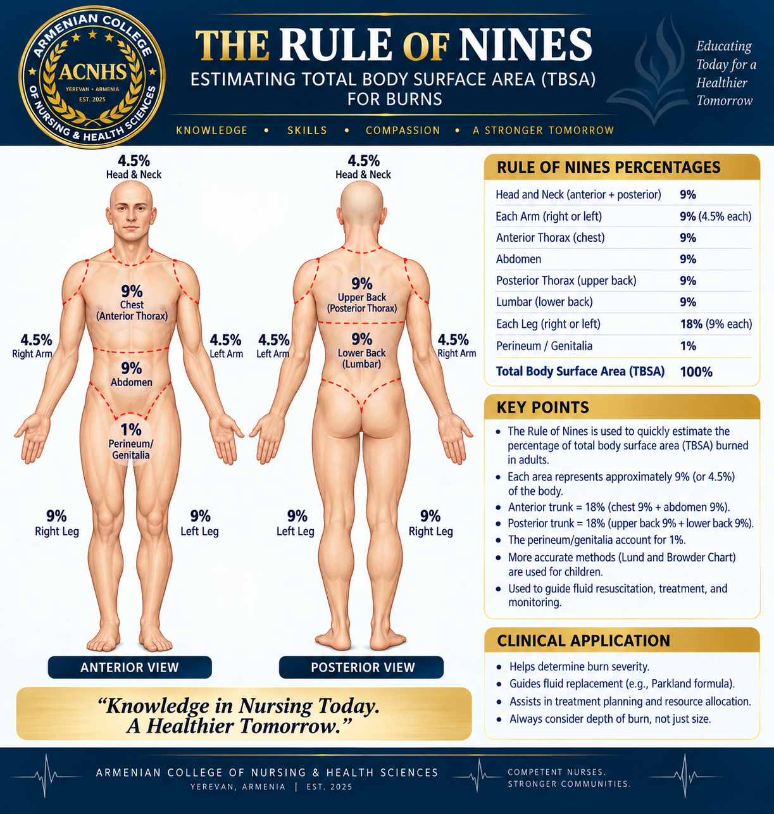

Classification, TBSA, fluid resuscitation, airway risk, phases of care, and complications
A burn is damage to the skin and tissues caused by heat, chemicals, electricity, or radiation (like sunlight or X-rays). Severity depends on:
| Degree | Layers Affected | Symptoms | Pain? | Healing Time |
|---|---|---|---|---|
| 1st (Superficial) | Epidermis | Red, dry, blanches, no blisters | Yes | 3–7 days |
| 2nd (Superficial Partial Thickness) | Epidermis + partial dermis | Blisters, pink, moist, very painful | Yes | 1–3 weeks, scar risk high |
| 2nd (Deep Partial Thickness) | Epidermis + deep dermis | Pale, white, diminished pain | Less | May require graft |
| 3rd (Full Thickness) | All skin layers into fat | Leathery, dry, black/red/white, no pain | No | Months, needs graft |
| 4th (Subdermal) | Into muscle/bone | Charred, no sensation, exposed bone | No | Amputation likely |
Moist/pink = 2nd degree. Leathery = 3rd degree. Bone exposed = 4th degree.
Used to estimate how much of the body is burned, for fluid resuscitation and classification.

| Severity | TBSA/Location | Examples |
|---|---|---|
| Minor | <10% adults, <5% kids/elderly | Sunburn |
| Moderate | 10–20% TBSA or deep 2nd degree | Small 3rd-degree |
| Major | >20% TBSA or critical areas (face, hands, feet, genitals, airway) | Electrical, inhalation, large burns |
Used in the emergent phase to prevent shock.
Timed from the moment of injury, not time of arrival. This is a clinical estimate only — actual fluids are titrated to urine output (0.5–1 mL/kg/hr) and ordered by the provider.
Caused by breathing in smoke, steam, or toxic gases (carbon monoxide or cyanide).
Soot around mouth/nose, singed nasal hairs, hoarseness, stridor (airway closing), confusion or cherry-red skin (CO poisoning). Intubate early — before swelling closes the airway!
Priority: Airway, Fluids, Prevent Shock
Priority: Wound Healing, Infection Prevention, Nutrition
Priority: Physical Therapy, Scar Prevention, Emotional Support
Hidden damage — can injure heart, brain, muscles, organs.
Can keep burning until fully washed off.
Signs: low BP, fast HR, pale/cold skin. Treat with IV fluids (Parkland formula).
Too much swelling inside tight skin blocks blood flow. Signs: pain, pale skin, no pulse, tingling, paralysis. Treated with escharotomy (cutting burned skin to release pressure).
Life-threatening infection in burn patients. Signs: fever, fast HR, low BP, confusion. Treat with IV antibiotics and sterile wound care.
In the emergent burn phase, circulation is poor — especially to muscles and the gut.
IM and PO meds may not absorb properly when circulation is poor. IV (intravenous) meds are the safest and fastest route in the emergent phase.
TBSA = Rule of Nines (adult/child). Fluids = Parkland Formula with LR. Airway = soot, singed hair, hoarseness → intubate. Pain = IV opioids ONLY. Electrolytes = ↑K⁺ early, ↓K⁺ later. Infection = fever, ↑WBC, pus, odor. Psychosocial = PTSD, anxiety, body image.